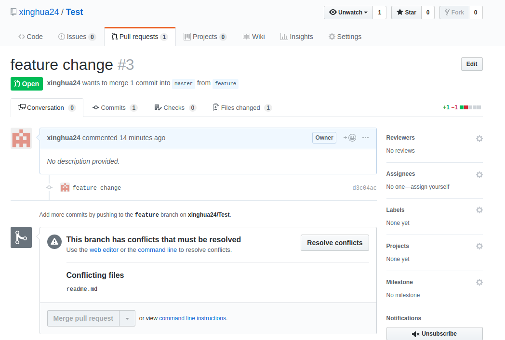

Git
Git Introduction
Core Concept
The Three areas
- Working Tree - files you are currently working on. It is a tree because it implies the entire directory structure. It is used to be called ‘working directory’ until git v2.9.
- Index - contains changes about what will go into the next commit. Technical name in Git is “index”. It is called “Staging Area” sometimes.
- Repository(.git folder) - where git stores the metadata and object database for the project.
 Working directory, staging area, and Git directory. Image from [https://git-scm.com/book/en/v1/Getting-Started-Git-Basics](https://git-scm.com/book/en/v1/Getting-Started-Git-Basics)
Working directory, staging area, and Git directory. Image from [https://git-scm.com/book/en/v1/Getting-Started-Git-Basics](https://git-scm.com/book/en/v1/Getting-Started-Git-Basics)
HEAD - This is a pointer normally points to a named branch(e.g. master). When we use a checkout command to checkout
a specific commit, HEAD is in Detached state.
Tilde vs caret
- HEAD^ - first parent of HEAD. same as HEAD^1.
- HEAD^2 - second parent of HEAD.
- HEAD^^ - first parent of the first parent of HEAD. Not the same as HEAD^2. Equivalent of HEAD~2.
- HEAD~ - parent of HEAD
- HEAD~2 - 2 levels up the hierarchy.
- see Tilde vs caret
Basic Commands
These are the most commonly used commands.
1 | # create a git repo |
Config
The global configuration can be manually modified in ~/.gitconfig
1 | git config --global user.name 'First Last' |
Line Ending Conversions
There are 3 config options regarding how git handles line ending conversions.
- Checkout Windows-style, commit Unix-style line endings. Git converts LF to CRLF when checking out text files. Recommended for windows. (“core.autocrlf” is set to “true”)
- Checkout as-is, commit Unix-style line endings. Recommended for Unix. (“core.autocrlf” is set to “input”)
- Checkout as-is, commit as-is. Not recommended for cross-platform projects. (“core.autocrlf” is set to “false”)
if “core.autocrlf” is set to “input”, a warning will be displayed when adding text files to index in Windows.
1 | warning: CRLF will be replaced by LF in foo.txt. |
Set “safecrlf” to be “false” to hide the warning message. So these two commands can go together.
1 | git config --global core.autocrlf input |
git add
git add updates the index using the current content found in the working tree, to prepare the content staged for the next commit.
1 | # Stage all files (that are not listed in the .gitignore) in the entire repository |
use --patch or -p option if you want to stage part of a file for commit. Git will ask you what you want to do with each hunk;
1 | Stage this hunk [y,n,q,a,d,e,?]? |
here are the options you can select
y - stage this hunk
n - do not stage this hunk
q - quit; do not stage this hunk or any of the remaining ones
a - stage this hunk and all later hunks in the file
d - do not stage this hunk or any of the later hunks in the file
g - select a hunk to go to
e - manually edit the current hunk
? - print help
git checkout
This command can be used to switch branch. Can also be used to revert file to a commit or to restore file.
Git 2.23 separates git checkout into two commands:
git switchto switch branchesgit restoreto restore working tree files
1 | # switch branch |
git switch
git switch - Switch branches
1 | # switch to main branch |
git restore
git restore - Restore working tree files or files in the index.
Restore location - by default, the restore location is the working tree. --staged will restore the index only. To restore both working tree and index, use --staged --worktree.
Source - if --staged is given, the contents are restored from HEAD, otherwise from the index. Use --source to restore from a different commit.
1 | # restore all files in the current directory to match the version in the index. |
git reset
git-reset - Reset current HEAD to the specified state. The git reset command is a complex and versatile tool for undoing changes.
git reset is similar in behavior to git checkout. Where git checkout solely operates on the HEAD ref pointer, git reset will move the HEAD ref pointer and the current branch ref pointer.
Options:
--hard- resets the index and working tree.--mixed- resets the index. This is the default.--soft- doesn’t touch the idnex file or the working tree at all.
1 | # back out all the changes since last commit, both working tree and the index. |
Reset to a Commit
If you haven’t push the commit, you can fix the commit locally. DO NOT use these command if you have already pushed the changes.
1 | # reset to the target commit. Both change in the working tree and the index will be kept |
For more information on git reset, see https://www.atlassian.com/git/tutorials/undoing-changes/git-reset
Revert Pushed Commit
Revert will create new commits to undo the previous commit. git revert require your working tree to be clean.
If you want to throw away all uncommitted changes in your working directory, you should see git-reset instead.
To revert a pushed commit, first get the commit ID
1 | git log --oneline |
Then execute git revert commit-id to revert the commit. This will create a commit that undos the commit to be revert. You can also use this command to undo a range of commits
1 | # to revert multiple commits, start with 901300d, then 7806790 and 01926a4 |
If you don’t want to create a commit, add -n or --no-commit option. Changes to revert the commit will be in stage area. No commit is created.
1 | git revert -n 874845a..4dd4b4e |
Revert a merge commit
1 | # To revert a merge commit. Merge commit has two parents. You must use -m flag to specify the mainline. |
If there is conflict, you can choose to resolve the conflict or use git revert --abort to abort the operation.
1 | # abort the revert operation |
see git revert man page for more information
Upstream
The term upstream and downstream refers to the repository. Generally, upstream is from where you clone the repository, and downstream is any project that integrates your work with other works.
set the upstream when pushing a new local branch
1 | git push -u origin new-branch |
You can set the upstream for an existing branch
1 | git branch --set-upstream-to=origin/some-branch some-branch |
You can also unset a upstream
1 | git branch --unset-upstream |
find out which remote branch a local branch is tracking
1 | git branch -vv |
Reference:
Remote
1 | # show remote URLs |
Branching & Merge
1 | # show local branches. * points to the branch that is checked out |
Fetch and Pull
1 | # fetch - only download all branches from remote, do not merge |
Push
1 | # push a new branch to remote. -u is short for --set-upstream |
If the current branch only exist in local and not in remote, then the following error will occur. In this case,
Use -u or --set-upstream flag to set the up stream.
1 | fatal: The current branch master has no upstream branch. |
Rebase
git rebase - Reapply commits on top of another base tip.
1 | # this command only make change in the current branch. The branch from parameter is not changed |
Diff
most common commands are git diff and git diff –cached
1 | # you can use 'difftool' instead of 'diff' if 'tool.diff' is setup |
Tagging
Tagging allows you to tag specific points in a repository’s history as being important.
There are two types of tags
- Lightweight tag - just a pointer to a specific commit
- Annotated tag - stores as full object in the Git database. They’re checksummed; contain the tagger name, email, and data; have a tagging message.
1 | # List tags with optional -l or --list |
For more information on tagging see
Stash
Stash - Use git stash when you want to record the current state of the working tree and the index, but want to go back to a clean working tree.
Ref Doc: https://git-scm.com/docs/git-stash. Stashing is handy if you need to quickly switch context and work on something else.
One way to use Stash is to stash before running git pull command. after pull is completed,
run git stash apply. this way no merge conflict will occur when pulling files from remote.
1 | # save a stash |
In Powershell, curly braces have special meaning. You need to surround the stash name with single quote or escape with backtick. Otherwise you will get error message error: unknown switch 'e'.
1 | git stash apply 'stash@{0}' |
More stash tutorial: Atlassian Git Stash Tutorial
Subtree
Git subtree allows one repository to exist inside the parent repository as a sub-directory. Useful for maintaining sub-project.
1 | # Add subtree |
The main drawback for subtree is you have to specify the directory path for every push/pull.
Reference
git worktree
A git repository can support multiple working trees, allowing you to check out more than one branch at a time.
In its simplest form, git worktree add <path> automatically creates a new branch whose name is the final component of
1 | # `git worktree add <path>`simplest form. create a new branch named hotfix-jira-1234 at path ../hotfix-jira-1234 |
more on git worktree
.gitignore
The rules for the patterns you can put in the .gitignore file are as follows:
- Blank lines or lines starting with # are ignored.
- Standard glob patterns work, and will be applied recursively throughout the entire working tree.
- You can start patterns with a forward slash (/) to avoid recursivity.
- You can end patterns with a forward slash (/) to specify a directory.
- You can negate a pattern by starting it with an exclamation point (!).
Example .gitignore file:
1 | # ignore all .DS_Store file or directory |
To ignore all .DS_Store file in MacOS:
1 | echo .DS_Store >> ~/.gitignore_global |
More on .gitignore
Gitflow
Gitflow is a popular branching model for Git. it was introduced by Vincent Driessen.
There are two main branches
- master - branch that is always production-ready and contains the last release version fo source code in production
- develop - reflects the development changes. This is where feature branches merges to.
Other branches
- feature - derive from develop branch. used to develop features. Merged to develop branch.
- release - derived from develop branch that is used for release. merged to master and develop. release is merged to develop branch so that important updates is not lost. After the merge, release branch can be deleted.
- hotfix - derived from master branch. It is used to fix a bug in production. It is merged to master and develop branch like the release branch.
 Author: Vincent Driessen
Author: Vincent Driessen
For more details on Gitflow, see Gitflow workflow by Atlassian
For a practical example of Gitflow workflow, see Git Flow Workflow
Other Stuffs
Other Commands
1 | # show files being tracked |
git push -u flag
When you create a local branch and then push it to the remote repository. You can add a -u flag when doing a git push. It adds a tracking reference to the upstream you are pushing to. There is a ‘link’ between local and remote branch. So when you do a git pull without any argument, git will fetch and update local branch. If you do it without -u flag, local branch will not keep track of the change in the remote repository.
-u flag is the same as –set-upstream.
Example
1 | git push -u origin new-branch |
For every branch that is up to date or successfully pushed, add upstream (tracking) reference, used by argument-less git-pull and other commands.
Cherry-Pick
Apply the commit from other branch to the current branch. see Documentation.
If there are multiple commits to cherry-pick, apply the older ones first.
git config –global core.editor “
usage:
1 | git cherry-pick <commit sha1>... |
Alias
Sometimes it is convenient to create alias in ~/.bashrc for git commands.
1 | alias gst='git status' |
Resolving the conflict between Git branches
Pull Request with conflict:

The following steps will resolve conflict regardless if Pull Request is created or not.
Assuming
- Destination branch is master
- Source branch is feature
pull the latest changes from destination branch
1
2git checkout master
git pullmake sure you are on the source branch(feature in this case). pull if necessary
1
2git checkout feature
git pullmerge branch master into feature
1
git merge master
resolve the conflicts
commit the change and push
1
2
3git add .
git commit
git push
Reference:
- Pro Git Book
- Git Reference
- Youtube Git Branching and Merging
- Working tree vs Working directory
- Git aliases for lazy developers by Ire Aderinokun
- A successful Git branching model by Vincent Driessen
- gitflow
- Stackoverflow - How do I revert a Git repository to a previous commit?
- atlassian git reset documentation
- .gitignore all the .DS_Store files in every folder and subfolder